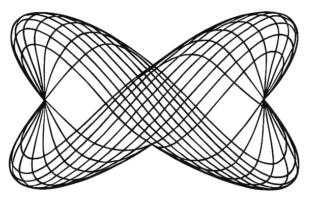

<!DOCTYPE html>
<html lang="en">

<head>
  <meta charset="UTF-8" />
  <meta name="viewport" content="width=device-width, initial-scale=1.0" />
  <link rel="icon" href="logo.ico" sizes="any" />
  <title>Harmonograph Simulator</title>
  <!-- Tailwind via CDN -->
  <script src="https://cdn.tailwindcss.com"></script>
  <!-- Keep MathJax inside card: automatic line breaks and container width -->
  <style>
    mjx-container {
      max-width: 100% !important;
      overflow-x: auto;
      overflow-y: hidden;
    }
  </style>
  <script>
    window.MathJax = {
      tex: {
        inlineMath: [["\\(", "\\)"]],
        displayMath: [["\\[", "\\]"]],
        tags: 'ams'
      },
      chtml: {
        linebreaks: { automatic: true, width: 'container' }
      }
    };
  </script>
  <!-- MathJax -->
  <script id="mathjax-script" async src="https://cdn.jsdelivr.net/npm/mathjax@3/es5/tex-mml-chtml.js"></script>
</head>

<body class="bg-neutral-50 text-neutral-900">
  <div id="root"></div>

  <!-- React 18 + ReactDOM 18 + Babel for JSX in-browser -->
  <script src="https://unpkg.com/react@18/umd/react.development.js" crossorigin></script>
  <script src="https://unpkg.com/react-dom@18/umd/react-dom.development.js" crossorigin></script>
  <script src="https://unpkg.com/@babel/standalone/babel.min.js"></script>

  <script type="text/babel">
    const { useEffect, useMemo, useRef, useState } = React;
    // Serialize only essential numeric/string state to a compact URL hash
    const encodeState = (obj) => btoa(unescape(encodeURIComponent(JSON.stringify(obj))));
    const decodeState = (s) => { try { return JSON.parse(decodeURIComponent(escape(atob(s)))); } catch { return null; } };

    function TeX({ children, inline = true }) {
      const ref = React.useRef(null);
      React.useEffect(() => {
        const node = ref.current;
        if (!node) return;
        const run = () => window.MathJax?.typesetPromise?.([node]);
        if (window.MathJax?.startup?.promise) {
          window.MathJax.startup.promise.then(run);
          return;
        }
        if (!window.MathJax?.typesetPromise) {
          const script = document.getElementById('mathjax-script');
          if (script) {
            const onLoad = () => run();
            script.addEventListener('load', onLoad, { once: true });
            return () => script.removeEventListener('load', onLoad);
          }
        }
        run();
      }, [children]);
      const Tag = inline ? 'span' : 'div';
      return <Tag ref={ref}>{children}</Tag>;
    }

    const I18N = {
      en: {
        appTitle: "Harmonograph Simulator",
        model: "Model",
        type: "Type",
        axesX: "n_x axes (X)",
        axesY: "n_y axes (Y)",
        duration: "Duration (s)",
        fps: "FPS",
        stepsPerFrame: "Steps/frame",
        rotation: "Rotation (\\(\\omega\\)) rad/s",
        theta0: "Initial angle (\\(\\theta_0\\))",
        canvasWidth: "Canvas width",
        canvasHeight: "Canvas height",
        colorModeFixed: "Color mode: Fixed",
        colorModeDynamic: "Color mode: Animated color",
        startHue: "Start hue",
        hueSpeed: "Hue speed (°/s)",
        background: "Background",
        strokeAndWidth: "Stroke (fixed color) • Line width",
        draw: "Draw",
        quickDraw: "Quick Draw",
        stop: "Stop",
        clear: "Clear Canvas",
        download: "Download PNG",
        initConds: "Initial conditions & parameters",
        xAxisTitle: "X-axis: \\(x(t)=\\sum A_{x,k} e^{-d_{x,k}t}\\sin(2\\pi f_{x,k} t + \\phi_{x,k})\\)",
        yAxisTitle: "Y-axis: \\(y(t)=\\sum A_{y,k} e^{-d_{y,k}t}\\sin(2\\pi f_{y,k} t + \\phi_{y,k})\\)",
        amplitude: "Amplitude",
        frequency: "Frequency",
        phase: "Phase",
        damping: "Damping",
        units: "(Units: A px, f Hz, \\(\\phi\\) rad, d 1/s)",
        howItWorks: "How it works",
        mathModel: "Mathematical model",
        footer: "Based on the book 'Harmonograph - A visual guide to the mathematics of music' • cesariogarcia.com",
        language: "Language",
        typeSimple: "Simple pendulum (Lissajous)",
        typeCompound: "Compound (sum of axes)",
        typeRotary: "Rotary-table harmonograph",
        descSimple: "Two perpendicular damped oscillations drive the pen along X and Y. Different frequency ratios and phases yield Lissajous-like patterns. Damping causes the trajectory to spiral toward the origin over time.",
        descCompound: "Each coordinate is a sum of multiple damped sinusoids (axes/components). This increases richness and can model 3+ effective degrees of freedom.",
        descRotary: "A single damped oscillation in X and Y is combined with a steady table rotation. The rotation maps the parametric curve through time, producing floral, rosette-like figures.",
        resizeHint: "Drag the bottom-right corner to resize the canvas",
        fullscreen: "Fullscreen",
        fitWindow: "Fit to window",
        zoom: "Zoom (%)",
        share: "Share link",
        copied: "Copied to clipboard",
      },
      pt: {
        appTitle: "Simulador de Harmonógrafos",
        model: "Modelo",
        type: "Tipo",
        axesX: "n_x eixos (X)",
        axesY: "n_y eixos (Y)",
        duration: "Duração (s)",
        fps: "FPS",
        stepsPerFrame: "Passos/frame",
        rotation: "Rotação (\\(\\omega\\)) rad/s",
        theta0: "Ângulo inicial (\\(\\theta_0\\))",
        canvasWidth: "Largura do canvas",
        canvasHeight: "Altura do canvas",
        colorModeFixed: "Modo de cor: Fixa",
        colorModeDynamic: "Modo de cor: Cor animada",
        startHue: "Matiz inicial",
        hueSpeed: "Velocidade da matiz (°/s)",
        background: "Fundo",
        strokeAndWidth: "Traço (cor fixa) • Espessura",
        draw: "Desenhar",
        quickDraw: "Desenho Rápido",
        stop: "Parar",
        clear: "Apagar Canvas",
        download: "Descarregar PNG",
        initConds: "Condições iniciais e parâmetros",
        xAxisTitle: "Eixo X: \\(x(t)=\\sum A_{x,k} e^{-d_{x,k}t}\\sin(2\\pi f_{x,k} t + \\phi_{x,k})\\)",
        yAxisTitle: "Eixo Y: \\(y(t)=\\sum A_{y,k} e^{-d_{y,k}t}\\sin(2\\pi f_{y,k} t + \\phi_{y,k})\\)",
        amplitude: "Amplitude",
        frequency: "Frequência",
        phase: "Fase",
        damping: "Amortecimento",
        units: "(Unidades: A px, f Hz, \\(\\phi\\) rad, d 1/s)",
        howItWorks: "Como funciona",
        mathModel: "Modelo matemático",
        footer: "Baseado no livro 'Harmonograph - A visual guide to the mathematics of music' • cesariogarcia.com",
        language: "Língua",
        typeSimple: "Pêndulo simples (Lissajous)",
        typeCompound: "Composto (soma de eixos)",
        typeRotary: "Mesa rotativa",
        descSimple: "Duas oscilações amortecidas perpendiculares conduzem a caneta nos eixos X e Y. Diferentes rácios de frequência e fases geram padrões tipo Lissajous. O amortecimento faz a trajetória enrolar-se para a origem.",
        descCompound: "Cada coordenada é a soma de várias senoides amortecidas (eixos/componentes). Isto aumenta a riqueza e pode modelar 3+ graus de liberdade.",
        descRotary: "Uma oscilação amortecida em X e Y combina-se com uma rotação constante da mesa, produzindo figuras florais/rosetas.",
        resizeHint: "Arrasta o canto inferior direito para aumentar o canvas",
        fullscreen: "Ecrã inteiro",
        fitWindow: "Ajustar à janela",
        zoom: "Zoom (%)",
        share: "Partilhar link",
        copied: "Copiado para a área de transferência",
      },
      fr: {
        appTitle: "Simulateur d'Harmonographes",
        model: "Modèle",
        type: "Type",
        axesX: "n_x axes (X)",
        axesY: "n_y axes (Y)",
        duration: "Durée (s)",
        fps: "FPS",
        stepsPerFrame: "Pas/image",
        rotation: "Rotation (\\(\\omega\\)) rad/s",
        theta0: "Angle initial (\\(\\theta_0\\))",
        canvasWidth: "Largeur du canvas",
        canvasHeight: "Hauteur du canvas",
        colorModeFixed: "Mode couleur : Fixe",
        colorModeDynamic: "Mode couleur : Couleur animée",
        startHue: "Teinte initiale",
        hueSpeed: "Vitesse de teinte (°/s)",
        background: "Fond",
        strokeAndWidth: "Trait (couleur fixe) • Épaisseur",
        draw: "Dessiner",
        quickDraw: "Dessin rapide",
        stop: "Arrêter",
        clear: "Effacer le Canvas",
        download: "Télécharger PNG",
        initConds: "Conditions initiales & paramètres",
        xAxisTitle: "Axe X : \\(x(t)=\\sum A_{x,k} e^{-d_{x,k}t}\\sin(2\\pi f_{x,k} t + \\phi_{x,k})\\)",
        yAxisTitle: "Axe Y : \\(y(t)=\\sum A_{y,k} e^{-d_{y,k}t}\\sin(2\\pi f_{y,k} t + \\phi_{y,k})\\)",
        amplitude: "Amplitude",
        frequency: "Fréquence",
        phase: "Phase",
        damping: "Amortissement",
        units: "(Unités : A px, f Hz, \\(\\phi\\) rad, d 1/s)",
        howItWorks: "Comment ça marche",
        mathModel: "Modèle mathématique",
        footer: "Basé sur le livre 'Harmonograph - A visual guide to the mathematics of music' • cesariogarcia.com",
        language: "Langue",
        typeSimple: "Pendule simple (Lissajous)",
        typeCompound: "Composé (somme d'axes)",
        typeRotary: "Table tournante",
        descSimple: "Deux oscillations amorties perpendiculaires déplacent le stylo selon X et Y. Des rapports de fréquences et des phases différents produisent des figures de type Lissajous. L'amortissement fait converger la trajectoire vers l'origine au fil du temps.",
        descCompound: "Chaque coordonnée est la somme de plusieurs sinusoïdes amorties (axes/composantes). Cela enrichit le tracé et permet de modéliser plus de trois degrés de liberté effectifs.",
        descRotary: "Une oscillation amortie unique en X et Y, combinée à une rotation constante de la table. Cette rotation fait évoluer la courbe paramétrique au fil du temps et génère des motifs floraux en rosette.",
        resizeHint: "Faites glisser le coin inférieur droit pour redimensionner le canvas",
        fullscreen: "Plein écran",
        fitWindow: "Ajuster à la fenêtre",
        zoom: "Zoom (%)",
        share: "Partager le lien",
        copied: "Copié dans le presse-papiers",
      },
      es: {
        appTitle: "Simulador de Harmonógrafos",
        model: "Modelo",
        type: "Tipo",
        axesX: "n_x ejes (X)",
        axesY: "n_y ejes (Y)",
        duration: "Duración (s)",
        fps: "FPS",
        stepsPerFrame: "Pasos/frame",
        rotation: "Rotación (\\(\\omega\\)) rad/s",
        theta0: "Ángulo inicial (\\(\\theta_0\\))",
        canvasWidth: "Anchura del canvas",
        canvasHeight: "Altura del canvas",
        colorModeFixed: "Modo de color: Fijo",
        colorModeDynamic: "Modo de color: Color animado",
        startHue: "Tono inicial",
        hueSpeed: "Velocidad del tono (°/s)",
        background: "Fondo",
        strokeAndWidth: "Trazo (color fijo) • Grosor",
        draw: "Dibujar",
        quickDraw: "Dibujo rápido",
        stop: "Parar",
        clear: "Borrar Canvas",
        download: "Descargar PNG",
        initConds: "Condiciones iniciales y parámetros",
        xAxisTitle: "Eje X: \\(x(t)=\\sum A_{x,k} e^{-d_{x,k}t}\\sin(2\\pi f_{x,k} t + \\phi_{x,k})\\)",
        yAxisTitle: "Eje Y: \\(y(t)=\\sum A_{y,k} e^{-d_{y,k}t}\\sin(2\\pi f_{y,k} t + \\phi_{y,k})\\)",
        amplitude: "Amplitud",
        frequency: "Frecuencia",
        phase: "Fase",
        damping: "Amortiguamiento",
        units: "(Unidades: A px, f Hz, \\(\\phi\\) rad, d 1/s)",
        howItWorks: "Cómo funciona",
        mathModel: "Modelo matemático",
        footer: "Basado en el libro 'Harmonograph - A visual guide to the mathematics of music' • cesariogarcia.com",
        language: "Idioma",
        typeSimple: "Péndulo simple (Lissajous)",
        typeCompound: "Compuesto (suma de ejes)",
        typeRotary: "Mesa giratoria",
        descSimple: "Dos oscilaciones amortiguadas perpendiculares mueven el lápiz en X e Y. Diferentes relaciones de frecuencia y fases generan figuras tipo Lissajous. El amortiguamiento hace que la trayectoria se enrolle hacia el origen con el tiempo.",
        descCompound: "Cada coordenada es la suma de varias sinusoides amortiguadas (ejes/componentes). Esto aumenta la riqueza del trazado y puede modelar más de tres grados de libertad efectivos.",
        descRotary: "Una única oscilación amortiguada en X e Y combinada con una rotación constante de la mesa. La rotación hace evolucionar la curva paramétrica en el tiempo, produciendo motivos florales en forma de roseta.",
        resizeHint: "Arrastra la esquina inferior derecha para redimensionar el canvas",
        fullscreen: "Pantalla completa",
        fitWindow: "Ajustar a la ventana",
        zoom: "Zoom (%)",
        share: "Compartir enlace",
        copied: "Copiado al portapapeles",
      },
      it: {
        appTitle: "Simulatore di Armonografi",
        model: "Modello",
        type: "Tipo",
        axesX: "n_x assi (X)",
        axesY: "n_y assi (Y)",
        duration: "Durata (s)",
        fps: "FPS",
        stepsPerFrame: "Passi/frame",
        rotation: "Rotazione (\\(\\omega\\)) rad/s",
        theta0: "Angolo iniziale (\\(\\theta_0\\))",
        canvasWidth: "Larghezza canvas",
        canvasHeight: "Altezza canvas",
        colorModeFixed: "Modalità colore: Fissa",
        colorModeDynamic: "Modalità colore: Colore animato",
        startHue: "Tinta iniziale",
        hueSpeed: "Velocità tinta (°/s)",
        background: "Sfondo",
        strokeAndWidth: "Tratto (colore fisso) • Spessore",
        draw: "Disegna",
        quickDraw: "Disegno rapido",
        stop: "Ferma",
        clear: "Pulisci Canvas",
        download: "Scarica PNG",
        initConds: "Condizioni iniziali e parametri",
        xAxisTitle: "Asse X: \\(x(t)=\\sum A_{x,k} e^{-d_{x,k}t}\\sin(2\\pi f_{x,k} t + \\phi_{x,k})\\)",
        yAxisTitle: "Asse Y: \\(y(t)=\\sum A_{y,k} e^{-d_{y,k}t}\\sin(2\\pi f_{y,k} t + \\phi_{y,k})\\)",
        amplitude: "Ampiezza",
        frequency: "Frequenza",
        phase: "Fase",
        damping: "Smorzamento",
        units: "(Unità: A px, f Hz, \\(\\phi\\) rad, d 1/s)",
        howItWorks: "Come funziona",
        mathModel: "Modello matematico",
        footer: "Basato sul libro 'Harmonograph - A visual guide to the mathematics of music' • cesariogarcia.com",
        language: "Lingua",
        typeSimple: "Pendolo semplice (Lissajous)",
        typeCompound: "Composto (somma di assi)",
        typeRotary: "Tavola rotante",
        descSimple: "Due oscillazioni smorzate e perpendicolari guidano la penna lungo X e Y. Rapporti di frequenza e fasi diversi producono figure tipo Lissajous. Lo smorzamento fa spiraleggiare la traiettoria verso l'origine col tempo.",
        descCompound: "Ogni coordinata è la somma di più sinusoidi smorzate (assi/componenti). Questo arricchisce il disegno e consente di modellare più di tre gradi di libertà effettivi.",
        descRotary: "Un'unica oscillazione smorzata in X e Y combinata con una rotazione costante del piatto. La rotazione fa evolvere la curva parametrica nel tempo generando motivi floreali a rosetta.",
        resizeHint: "Trascina l'angolo in basso a destra per ridimensionare il canvas",
        fullscreen: "Schermo intero",
        fitWindow: "Adatta alla finestra",
        zoom: "Zoom (%)",
        share: "Condividi link",
        copied: "Copiato negli appunti",
      },
      de: {
        appTitle: "Harmonograph-Simulator",
        model: "Modell",
        type: "Typ",
        axesX: "n_x Achsen (X)",
        axesY: "n_y Achsen (Y)",
        duration: "Dauer (s)",
        fps: "FPS",
        stepsPerFrame: "Schritte/Frame",
        rotation: "Rotation (\\(\\omega\\)) rad/s",
        theta0: "Anfangswinkel (\\(\\theta_0\\))",
        canvasWidth: "Canvas-Breite",
        canvasHeight: "Canvas-Höhe",
        colorModeFixed: "Farbmodus: Fix",
        colorModeDynamic: "Farbmodus: Animierte Farbe",
        startHue: "Startfarbton",
        hueSpeed: "Farbton-Geschwindigkeit (°/s)",
        background: "Hintergrund",
        strokeAndWidth: "Strich (Fixfarbe) • Linienbreite",
        draw: "Zeichnen",
        quickDraw: "Schnell zeichnen",
        stop: "Stopp",
        clear: "Canvas leeren",
        download: "PNG herunterladen",
        initConds: "Anfangsbedingungen & Parameter",
        xAxisTitle: "X-Achse: \\(x(t)=\\sum A_{x,k} e^{-d_{x,k}t}\\sin(2\\pi f_{x,k} t + \\phi_{x,k})\\)",
        yAxisTitle: "Y-Achse: \\(y(t)=\\sum A_{y,k} e^{-d_{y,k}t}\\sin(2\\pi f_{y,k} t + \\phi_{y,k})\\)",
        amplitude: "Amplitude",
        frequency: "Frequenz",
        phase: "Phase",
        damping: "Dämpfung",
        units: "(Einheiten: A px, f Hz, \\(\\phi\\) rad, d 1/s)",
        howItWorks: "Funktionsweise",
        mathModel: "Mathematisches Modell",
        footer: "Basierend auf dem Buch 'Harmonograph - A visual guide to the mathematics of music' • cesariogarcia.com",
        language: "Sprache",
        typeSimple: "Einfaches Pendel (Lissajous)",
        typeCompound: "Zusammengesetzt (Summen der Achsen)",
        typeRotary: "Drehtisch",
        descSimple: "Zwei gedämpfte, senkrechte Schwingungen steuern den Stift entlang X und Y. Unterschiedliche Frequenzverhältnisse und Phasen erzeugen Lissajous-artige Muster. Die Dämpfung lässt die Trajektorie mit der Zeit spiralförmig zum Ursprung hin zusammenlaufen.",
        descCompound: "Jede Koordinate ist eine Summe mehrerer gedämpfter Sinusschwingungen (Achsen/Komponenten). Das erhöht die Vielfalt und kann mehr als drei effektive Freiheitsgrade modellieren.",
        descRotary: "Eine einzelne gedämpfte Schwingung in X und Y wird mit einer gleichmäßigen Tischrotation kombiniert. Die Rotation führt die parametrische Kurve durch die Zeit und erzeugt blüten- bzw. rosettenartige Figuren.",
        resizeHint: "Ziehen Sie die rechte untere Ecke, um das Canvas zu vergrößern",
        fullscreen: "Vollbild",
        fitWindow: "An Fenster anpassen",
        zoom: "Zoom (%)",
        share: "Link teilen",
        copied: "In die Zwischenablage kopiert",
      },
    };

    const TYPES = { SIMPLE: "SIMPLE", COMPOUND: "COMPOUND", ROTARY: "ROTARY" };
    const COLOR_MODES = { FIXED: "FIXED", DYNAMIC: "DYNAMIC" };

    function App() {
      const canvasRef = React.useRef(null);
      const animRef = React.useRef({ id: 0, running: false, step: 0, totalSteps: 0, t: 0 });

      const [lang, setLang] = React.useState("en");
      const t = (k) => I18N[lang][k] || I18N.en[k] || k;

      const [width, setWidth] = React.useState(700); // on-screen canvas width
      const [height, setHeight] = React.useState(700); // on-screen canvas height
      const [exportW, setExportW] = React.useState(1200); // download width
      const [exportH, setExportH] = React.useState(1080); // download height
      const [bg, setBg] = React.useState("#ffffff");
      const [stroke, setStroke] = React.useState("#000000");
      const [lineWidth, setLineWidth] = React.useState(0.5);
      const [colorMode, setColorMode] = React.useState(COLOR_MODES.FIXED);

      const [type, setType] = React.useState(TYPES.SIMPLE);
      const [nx, setNx] = React.useState(1);
      const [ny, setNy] = React.useState(1);
      // Mobile-friendly inputs: keep editable strings, clamp on blur
      const [nxInput, setNxInput] = React.useState("1");
      const [nyInput, setNyInput] = React.useState("1");
      const clampInt = (x, min, max) => Math.max(min, Math.min(max, Math.round(x)));

      const defaultComp = (A = 180, f = 2, phi = 0, d = 0.002) => ({ A, f, phi, d });
      const [xComps, setXComps] = React.useState([defaultComp(200, 3, 1, 0.1)]);
      const [yComps, setYComps] = React.useState([defaultComp(200, 1, 0.1, 0.01)]);

      const [omega, setOmega] = React.useState(0.3);
      const [theta0, setTheta0] = React.useState(0);

      const [duration, setDuration] = React.useState(40);
      const [fps, setFps] = React.useState(60);
      const [stepsPerFrame, setStepsPerFrame] = React.useState(2);

      const [hue0, setHue0] = React.useState(200);
      const [hueSpeed, setHueSpeed] = React.useState(60);

      const containerRef = React.useRef(null);
      const [zoom, setZoom] = React.useState(100);
      const [copied, setCopied] = React.useState(false);

      React.useEffect(() => {
        const el = containerRef.current; if (!el) return;
        const ro = new ResizeObserver((entries) => {
          for (const e of entries) {
            const cw = Math.max(200, Math.round(e.contentRect.width));
            const ch = Math.max(200, Math.round(e.contentRect.height));
            if (cw !== width) setWidth(cw);
            if (ch !== height) setHeight(ch);
          }
        });
        ro.observe(el);
        return () => ro.disconnect();
      }, [containerRef, width, height]);

      React.useEffect(() => { setXComps((p) => resizeArray(p, nx, defaultComp())); }, [nx]);
      React.useEffect(() => { setYComps((p) => resizeArray(p, ny, defaultComp())); }, [ny]);
      // Keep the string inputs in sync when nx/ny change programmatically
      React.useEffect(() => { setNxInput(String(nx)); }, [nx]);
      React.useEffect(() => { setNyInput(String(ny)); }, [ny]);

      // Enforce exactly one axis for SIMPLE and ROTARY; allow multiple only for COMPOUND
      React.useEffect(() => {
        if (type !== TYPES.COMPOUND) {
          if (nx !== 1) setNx(1);
          if (ny !== 1) setNy(1);
        }
      }, [type, nx, ny]);

      // Load state from URL hash on mount
      React.useEffect(() => {
        const raw = location.hash.startsWith('#s=') ? location.hash.slice(3) : null;
        const data = raw ? decodeState(raw) : null;
        if (!data) return;
        try {
          setType(data.t ?? TYPES.SIMPLE);
          setNx(clampInt(data.nx ?? 1, 1, 4));
          setNy(clampInt(data.ny ?? 1, 1, 4));
          if (Array.isArray(data.x)) setXComps(data.x.map((c) => ({ A: +c.A, f: +c.f, phi: +c.phi, d: +c.d })));
          if (Array.isArray(data.y)) setYComps(data.y.map((c) => ({ A: +c.A, f: +c.f, phi: +c.phi, d: +c.d })));
          if (typeof data.omega === 'number') setOmega(data.omega);
          if (typeof data.theta0 === 'number') setTheta0(data.theta0);
          if (typeof data.bg === 'string') setBg(data.bg);
          if (typeof data.stroke === 'string') setStroke(data.stroke);
          if (typeof data.lw === 'number') setLineWidth(data.lw);
          if (typeof data.cm === 'string') setColorMode(data.cm);
          if (typeof data.h0 === 'number') setHue0(data.h0);
          if (typeof data.hs === 'number') setHueSpeed(data.hs);
          if (typeof data.dur === 'number') setDuration(clampInt(data.dur, 5, 120));
          if (typeof data.fps === 'number') setFps(clampInt(data.fps, 15, 120));
          if (typeof data.spf === 'number') setStepsPerFrame(clampInt(data.spf, 1, 20));
          if (typeof data.eW === 'number') setExportW(clampInt(data.eW, 200, 4000));
          if (typeof data.eH === 'number') setExportH(clampInt(data.eH, 200, 4000));
        } catch { }
      }, []);

      // Push state to URL hash (debounced a bit via RAF), minimal shape
      const pushURL = React.useCallback(() => {
        const data = {
          t: type,
          nx, ny,
          x: xComps.map(c => ({ A: c.A, f: c.f, phi: c.phi, d: c.d })),
          y: yComps.map(c => ({ A: c.A, f: c.f, phi: c.phi, d: c.d })),
          omega, theta0,
          bg, stroke, lw: lineWidth, cm: colorMode,
          h0: hue0, hs: hueSpeed,
          dur: duration, fps, spf: stepsPerFrame,
          eW: exportW, eH: exportH,
        };
        const hash = '#s=' + encodeState(data);
        history.replaceState(null, '', hash);
      }, [type, nx, ny, xComps, yComps, omega, theta0, bg, stroke, lineWidth, colorMode, hue0, hueSpeed, duration, fps, stepsPerFrame, exportW, exportH]);

      React.useEffect(() => {
        const id = requestAnimationFrame(pushURL);
        return () => cancelAnimationFrame(id);
      }, [pushURL]);

      const equationsHTML = React.useMemo(() => getEquationsHTML(type, xComps, yComps, omega, theta0), [type, xComps, yComps, omega, theta0]);
      const description = React.useMemo(() => getDescription(type, lang), [type, lang]);

      function resetCanvas() {
        const canvas = canvasRef.current; if (!canvas) return;
        const pxW = Math.round(width * window.devicePixelRatio);
        const pxH = Math.round(height * window.devicePixelRatio);
        canvas.width = pxW; canvas.height = pxH;
        const ctx = canvas.getContext("2d");
        ctx.setTransform(1, 0, 0, 1, 0, 0);
        ctx.scale(window.devicePixelRatio, window.devicePixelRatio);
        const cssW = width, cssH = height;
        ctx.fillStyle = bg; ctx.fillRect(0, 0, cssW, cssH);
        ctx.translate(cssW / 2, cssH / 2);
        ctx.lineWidth = lineWidth; ctx.lineCap = "round"; ctx.lineJoin = "round";
      }

      function modelXY(t) {
        let x = 0, y = 0;
        const lenX = (type === TYPES.COMPOUND) ? xComps.length : Math.min(1, xComps.length);
        const lenY = (type === TYPES.COMPOUND) ? yComps.length : Math.min(1, yComps.length);
        for (let i = 0; i < lenX; i++) {
          const c = xComps[i];
          x += c.A * Math.exp(-c.d * t) * Math.sin(2 * Math.PI * c.f * t + c.phi);
        }
        for (let j = 0; j < lenY; j++) {
          const c = yComps[j];
          y += c.A * Math.exp(-c.d * t) * Math.sin(2 * Math.PI * c.f * t + c.phi);
        }
        if (type === TYPES.ROTARY) {
          const th = theta0 + omega * t;
          const xr = x * Math.cos(th) - y * Math.sin(th);
          const yr = x * Math.sin(th) + y * Math.cos(th);
          return [xr, yr];
        }
        return [x, y];
      }

      // Sample the curve to compute bounds and center
      function sampleBounds(totalT, samples = 2000) {
        let minX = Infinity, maxX = -Infinity, minY = Infinity, maxY = -Infinity;
        const dt = totalT / samples; let t = 0;
        for (let i = 0; i <= samples; i++) {
          const [x, y] = modelXY(t);
          if (x < minX) minX = x; if (x > maxX) maxX = x;
          if (y < minY) minY = y; if (y > maxY) maxY = y;
          t += dt;
        }
        const cx = (minX + maxX) / 2; const cy = (minY + maxY) / 2;
        return { minX, maxX, minY, maxY, cx, cy };
      }

      // Compute a uniform scale to fit the bounds inside the canvas area (with small padding)
      function computeFitScale(bounds, cssW, cssH) {
        const pad = 16; // px padding on each side
        const availW = Math.max(1, cssW - pad);
        const availH = Math.max(1, cssH - pad);
        const w = Math.max(1e-6, bounds.maxX - bounds.minX);
        const h = Math.max(1e-6, bounds.maxY - bounds.minY);
        const s = Math.min(availW / w, availH / h);
        return (Number.isFinite(s) && s > 0) ? s : 1;
      }

      function stop() {
        if (animRef.current.running) { cancelAnimationFrame(animRef.current.id); animRef.current.running = false; }
      }

      function clearCanvas() { stop(); resetCanvas(); }

      function drawAnimated(resume = false) {
        // Cancel any existing RAF to avoid duplicate loops
        if (animRef.current.running && animRef.current.id) cancelAnimationFrame(animRef.current.id);
        resetCanvas();
        const ctx = canvasRef.current.getContext("2d");
        // Compute bounds to scale-to-fit and center
        const cssW = width, cssH = height;
        const bounds = sampleBounds(duration, 1500);
        const fit = computeFitScale(bounds, cssW, cssH);
        const z = zoom / 100;
        const scale = fit * z;
        ctx.scale(scale, scale);
        ctx.translate(-bounds.cx, -bounds.cy);
        ctx.lineWidth = lineWidth / scale; // keep visual width constant under zoom

        const totalSteps = Math.max(1000, Math.floor(duration * fps));
        const dt = duration / totalSteps;

        let step = 0;
        let t = 0;
        let prev = modelXY(0);

        // If resuming with the same totalSteps, fast-forward to the saved state by redrawing
        if (resume && animRef.current.running && animRef.current.totalSteps === totalSteps) {
          step = Math.max(0, Math.min(animRef.current.step || 0, totalSteps));
          t = Math.max(0, Math.min(animRef.current.t || 0, duration));
          // Reconstruct the already drawn part so visual continuity is preserved
          let tt = 0; let p = modelXY(0);
          for (let i = 0; i < step; i++) {
            tt += dt; const [x, y] = modelXY(tt);
            const color = (colorMode === COLOR_MODES.DYNAMIC)
              ? `hsl(${(hue0 + hueSpeed * tt) % 360} 100% 40%)` : stroke;
            ctx.beginPath();
            ctx.strokeStyle = color;
            ctx.moveTo(p[0], p[1]);
            ctx.lineTo(x, y);
            ctx.stroke();
            p = [x, y];
          }
          prev = p;
        } else {
          // Fresh start
          step = 0; t = 0; prev = modelXY(0);
        }

        const animate = () => {
          for (let s = 0; s < stepsPerFrame && step < totalSteps; s++, step++) {
            t += dt; const [x, y] = modelXY(t);
            const color = (colorMode === COLOR_MODES.DYNAMIC)
              ? `hsl(${(hue0 + hueSpeed * t) % 360} 100% 40%)` : stroke;
            ctx.beginPath();
            ctx.strokeStyle = color;
            ctx.moveTo(prev[0], prev[1]);
            ctx.lineTo(x, y);
            ctx.stroke();
            prev = [x, y];
          }
          // Save progress
          animRef.current.step = step;
          animRef.current.t = t;
          animRef.current.totalSteps = totalSteps;
          if (step < totalSteps) { animRef.current.running = true; animRef.current.id = requestAnimationFrame(animate); } else { animRef.current.running = false; }
        };
        // Mark running and kick off
        animRef.current.running = true;
        animRef.current.totalSteps = totalSteps;
        animRef.current.step = step;
        animRef.current.t = t;
        animate();
      }

      function drawQuick() {
        stop(); resetCanvas();
        const ctx = canvasRef.current.getContext("2d");
        // Compute bounds to scale-to-fit and center
        const cssW = width, cssH = height;
        const bounds = sampleBounds(duration, 3000);
        const fit = computeFitScale(bounds, cssW, cssH);
        const z = zoom / 100;
        const scale = fit * z;
        ctx.scale(scale, scale);
        ctx.translate(-bounds.cx, -bounds.cy);
        ctx.lineWidth = lineWidth / scale; // keep visual width constant under zoom
        const totalSteps = Math.max(4000, Math.floor(duration * 120));
        const dt = duration / totalSteps; let t = 0; let prev = modelXY(0);
        for (let i = 0; i < totalSteps; i++) {
          t += dt; const [x, y] = modelXY(t);
          const color = (colorMode === COLOR_MODES.DYNAMIC)
            ? `hsl(${(hue0 + hueSpeed * t) % 360} 100% 40%)` : stroke;
          ctx.beginPath();
          ctx.strokeStyle = color;
          ctx.moveTo(prev[0], prev[1]);
          ctx.lineTo(x, y);
          ctx.stroke();
          prev = [x, y];
        }
      }

      function downloadPNG() {
        // Render at export resolution to an offscreen canvas
        const cssW = clampInt(exportW, 200, 4000);
        const cssH = clampInt(exportH, 200, 4000);
        const off = document.createElement('canvas');
        off.width = cssW; off.height = cssH;
        const ctx = off.getContext('2d');
        ctx.setTransform(1, 0, 0, 1, 0, 0);
        ctx.fillStyle = bg; ctx.fillRect(0, 0, cssW, cssH);
        ctx.translate(cssW / 2, cssH / 2);
        // Fit figure to export dimensions (ignore on-screen zoom, export at 100%)
        const bounds = sampleBounds(duration, 3000);
        const fit = computeFitScale(bounds, cssW, cssH);
        const scale = fit;
        ctx.scale(scale, scale);
        ctx.translate(-bounds.cx, -bounds.cy);
        ctx.lineCap = 'round'; ctx.lineJoin = 'round';
        ctx.lineWidth = lineWidth / scale;
        const totalSteps = Math.max(4000, Math.floor(duration * 120));
        const dt = duration / totalSteps; let t = 0; let prev = modelXY(0);
        for (let i = 0; i < totalSteps; i++) {
          t += dt; const [x, y] = modelXY(t);
          const color = (colorMode === COLOR_MODES.DYNAMIC)
            ? `hsl(${(hue0 + hueSpeed * t) % 360} 100% 40%)` : stroke;
          ctx.beginPath();
          ctx.strokeStyle = color;
          ctx.moveTo(prev[0], prev[1]);
          ctx.lineTo(x, y);
          ctx.stroke();
          prev = [x, y];
        }
        const a = document.createElement('a');
        a.download = `harmonograph-${cssW}x${cssH}-${Date.now()}.png`;
        a.href = off.toDataURL('image/png');
        a.click();
      }

      const canEditRotation = type !== TYPES.SIMPLE;
      const typeLabel = (val) => ({
        [TYPES.SIMPLE]: I18N[lang].typeSimple,
        [TYPES.COMPOUND]: I18N[lang].typeCompound,
        [TYPES.ROTARY]: I18N[lang].typeRotary,
      })[val];

      // Auto-redraw on canvas size/zoom changes to keep figure centered and fitted
      // If an animation is in progress, keep it going; otherwise do a quick redraw.
      React.useEffect(() => {
        const id = requestAnimationFrame(() => {
          if (animRef.current.running) drawAnimated(true); else drawQuick();
        });
        return () => cancelAnimationFrame(id);
      }, [width, height, zoom]);

      // Redraw and resize when entering fullscreen on the canvas container
      React.useEffect(() => {
        const onFsChange = () => {
          if (document.fullscreenElement === containerRef.current) {
            setWidth(window.innerWidth);
            setHeight(window.innerHeight);
            setTimeout(() => { if (animRef.current.running) drawAnimated(true); else drawQuick(); }, 0);
          }
        };
        document.addEventListener('fullscreenchange', onFsChange);
        return () => document.removeEventListener('fullscreenchange', onFsChange);
      }, []);

      return (
        <div className="min-h-screen w-full bg-neutral-50 text-neutral-900">
          <div className="max-w-6xl mx-auto p-4 md:p-6 space-y-6">
            <header className="flex items-center justify-between gap-4 flex-wrap">
              <div className="flex items-center gap-3">
                
                <h1 className="text-2xl md:text-3xl font-bold">{t("appTitle")}</h1>
              </div>
              <div className="flex items-center gap-3 text-sm">
                <label className="flex items-center gap-2">
                  <span className="opacity-70">{t("language")}</span>
                  <Select
                    value={lang}
                    onChange={setLang}
                    options={[
                      { value: 'en', label: (<span className="flex items-center gap-2"> English</span>) },
                      { value: 'pt', label: (<span className="flex items-center gap-2"> Português</span>) },
                      { value: 'fr', label: (<span className="flex items-center gap-2"> Français</span>) },
                      { value: 'es', label: (<span className="flex items-center gap-2"> Español</span>) },
                      { value: 'it', label: (<span className="flex items-center gap-2"> Italiano</span>) },
                      { value: 'de', label: (<span className="flex items-center gap-2"> Deutsch</span>) },
                    ]}
                    className="w-36"
                  />
                </label>
              </div>
            </header>

            <section className="grid grid-cols-1 lg:grid-cols-2 gap-6">
              <div className="space-y-4 bg-white rounded-2xl shadow p-4 md:p-5">
                <h2 className="font-semibold text-lg">{t("model")}</h2>

                <div className="grid grid-cols-1 md:grid-cols-2 gap-3">
                  <label className="flex flex-col gap-1">
                    <span className="text-sm font-medium">{t("type")}</span>
                    <Select
                      value={type}
                      onChange={setType}
                      options={Object.values(TYPES).map((tv) => ({ value: tv, label: typeLabel(tv) }))}
                      className="w-full"
                    />
                  </label>

                  <div className="grid grid-cols-2 gap-3">
                    <label className="flex flex-col gap-1">
                      <span className="text-sm font-medium flex items-center gap-1"><TeX>{`\\(${t("axesX")}\\)`}</TeX></span>
                      <input
                        type="number"
                        inputMode="numeric"
                        pattern="[0-9]*"
                        min={1}
                        max={4}
                        value={nxInput}
                        disabled={type !== TYPES.COMPOUND}
                        onChange={(e) => setNxInput(e.target.value)}
                        onBlur={() => {
                          if (type !== TYPES.COMPOUND) {
                            setNx(1); setNxInput("1"); return;
                          }
                          const parsed = parseInt(nxInput, 10);
                          const next = Number.isFinite(parsed) ? Math.max(1, Math.min(4, parsed)) : nx;
                          setNx(next);
                          setNxInput(String(next));
                        }}
                        className="border rounded-lg px-3 py-2"
                      />
                    </label>
                    <label className="flex flex-col gap-1">
                      <span className="text-sm font-medium flex items-center gap-1"><TeX>{`\\(${t("axesY")}\\)`}</TeX></span>
                      <input
                        type="number"
                        inputMode="numeric"
                        pattern="[0-9]*"
                        min={1}
                        max={4}
                        value={nyInput}
                        disabled={type !== TYPES.COMPOUND}
                        onChange={(e) => setNyInput(e.target.value)}
                        onBlur={() => {
                          if (type !== TYPES.COMPOUND) {
                            setNy(1); setNyInput("1"); return;
                          }
                          const parsed = parseInt(nyInput, 10);
                          const next = Number.isFinite(parsed) ? Math.max(1, Math.min(4, parsed)) : ny;
                          setNy(next);
                          setNyInput(String(next));
                        }}
                        className="border rounded-lg px-3 py-2"
                      />
                    </label>
                  </div>

                  <label className="flex flex-col gap-1">
                    <span className="text-sm font-medium">{t("duration")}</span>
                    <NumberInput step={1} min={5} max={120} value={duration}
                      onCommit={(v) => setDuration(clampInt(v, 5, 120))} />
                  </label>

                  <div className="grid grid-cols-2 gap-3">
                    <label className="flex flex-col gap-1">
                      <span className="text-sm font-medium">{t("fps")}</span>
                      <NumberInput step={1} min={15} max={120} value={fps}
                        onCommit={(v) => setFps(clampInt(v, 15, 120))} />
                    </label>
                    <label className="flex flex-col gap-1">
                      <span className="text-sm font-medium">{t("stepsPerFrame")}</span>
                      <NumberInput step={1} min={1} max={20} value={stepsPerFrame}
                        onCommit={(v) => setStepsPerFrame(clampInt(v, 1, 20))} />
                    </label>
                  </div>

                  {type === TYPES.ROTARY && (
                    <div className="grid grid-cols-2 gap-3">
                      <label className="flex flex-col gap-1">
                        <span className="text-sm font-medium flex items-center gap-1"><TeX>{t("rotation")}</TeX></span>
                        <NumberInput step={0.01} decimal value={omega}
                          onCommit={(v) => setOmega(v)} />
                      </label>
                      <label className="flex flex-col gap-1">
                        <span className="text-sm font-medium flex items-center gap-1"><TeX>{t("theta0")}</TeX></span>
                        <NumberInput step={0.01} decimal value={theta0}
                          onCommit={(v) => setTheta0(v)} />
                      </label>
                    </div>
                  )}

                  <div className="grid grid-cols-2 gap-3">
                    <label className="flex flex-col gap-1">
                      <span className="text-sm font-medium">{t("canvasWidth")}</span>
                      <NumberInput min={200} max={4000} value={exportW}
                        onCommit={(v) => setExportW(clampInt(v, 200, 4000))} />
                    </label>
                    <label className="flex flex-col gap-1">
                      <span className="text-sm font-medium">{t("canvasHeight")}</span>
                      <NumberInput min={200} max={4000} value={exportH}
                        onCommit={(v) => setExportH(clampInt(v, 200, 4000))} />
                    </label>
                  </div>

                  <div className="grid grid-cols-2 gap-3">
                    <label className="flex items-center gap-2">
                      <input type="radio" name="colorMode" checked={colorMode === COLOR_MODES.FIXED} onChange={() => setColorMode(COLOR_MODES.FIXED)} />
                      <span className="text-sm">{t("colorModeFixed")}</span>
                    </label>
                    <label className="flex items-center gap-2">
                      <input type="radio" name="colorMode" checked={colorMode === COLOR_MODES.DYNAMIC} onChange={() => setColorMode(COLOR_MODES.DYNAMIC)} />
                      <span className="text-sm">{t("colorModeDynamic")}</span>
                    </label>
                  </div>

                  {colorMode === COLOR_MODES.DYNAMIC && (
                    <div className="grid grid-cols-2 gap-3">
                      <label className="flex flex-col gap-1">
                        <span className="text-sm font-medium">{t("startHue")}</span>
                        <NumberInput min={0} max={360} value={hue0}
                          onCommit={(v) => setHue0(clampInt(v, 0, 360))} />
                      </label>
                      <label className="flex flex-col gap-1">
                        <span className="text-sm font-medium">{t("hueSpeed")}</span>
                        <NumberInput step={1} value={hueSpeed}
                          onCommit={(v) => setHueSpeed(v)} />
                      </label>
                    </div>
                  )}

                  <div className="grid grid-cols-2 gap-3 items-end">
                    <label className="flex flex-col gap-1">
                      <span className="text-sm font-medium">{t("background")}</span>
                      <input type="color" value={bg} onChange={(e) => setBg(e.target.value)} className="h-10 w-full p-0 border rounded-lg" />
                    </label>
                    <label className="flex flex-col gap-1">
                      <span className="text-sm font-medium">{(t("strokeAndWidth").includes('•') ? t("strokeAndWidth").split('•')[0] : t("strokeAndWidth")).trim()}</span>
                      <input type="color" value={stroke} onChange={(e) => setStroke(e.target.value)} className="h-10 w-full p-0 border rounded-lg" />
                    </label>
                    <label className="flex flex-col gap-1">
                      <span className="text-sm font-medium">{(t("strokeAndWidth").includes('•') ? t("strokeAndWidth").split('•')[1] : 'Line width')?.trim()}</span>
                      <NumberInput step={0.2} min={0.2} max={10} decimal value={lineWidth}
                        onCommit={(v) => setLineWidth(v)} className="w-full" />
                    </label>
                  </div>

                  <div className="flex gap-3 flex-wrap pt-2">
                    <button onClick={drawAnimated} className="px-4 py-2 rounded-xl bg-black text-white hover:opacity-90">{t("draw")}</button>
                    <button onClick={drawQuick} className="px-4 py-2 rounded-xl bg-neutral-800 text-white hover:opacity-90">{t("quickDraw")}</button>
                    <button onClick={stop} className="px-4 py-2 rounded-xl bg-neutral-200 hover:bg-neutral-300">{t("stop")}</button>
                    <button onClick={clearCanvas} className="px-4 py-2 rounded-xl bg-neutral-100 hover:bg-neutral-200">{t("clear")}</button>
                    <button
                      onClick={() => {
                        if (document.activeElement && typeof document.activeElement.blur === 'function') {
                          document.activeElement.blur();
                        }
                        setTimeout(() => downloadPNG(), 0);
                      }}
                      className="px-4 py-2 rounded-xl bg-emerald-600 text-white hover:bg-emerald-700"
                    >
                      {t("download")}
                    </button>
                  </div>
                </div>
              </div>

              <div className="space-y-4 bg-white rounded-2xl shadow p-4 md:p-5">
                <h2 className="font-semibold text-lg">{t("initConds")}</h2>
                <AxisParams t={t} title={<TeX>{I18N[lang].xAxisTitle}</TeX>} comps={xComps} onChange={(idx, field, value) => updateComp(xComps, setXComps, idx, field, value)} />
                <AxisParams t={t} title={<TeX>{I18N[lang].yAxisTitle}</TeX>} comps={yComps} onChange={(idx, field, value) => updateComp(yComps, setYComps, idx, field, value)} />
              </div>
            </section>

            <section className="grid grid-cols-1 lg:grid-cols-2 gap-6 items-start">
              <div className="bg-white rounded-2xl shadow p-3 md:p-4">
                <div ref={containerRef} className="w-full h-[50vh] min-h-[260px] min-w-[260px] resize overflow-auto rounded-xl border relative" title={t('resizeHint')} style={{ background: bg }}>
                  <div className="absolute right-2 top-2 z-10 flex gap-2">
                    <button onClick={() => {
                      const newW = Math.min(1600, window.innerWidth - 64);
                      const newH = Math.min(1200, window.innerHeight - 200);
                      setWidth(newW);
                      setHeight(newH);
                      // As requested: set zoom to 100% and nothing else
                      setZoom(100);
                      setTimeout(() => { if (animRef.current.running) drawAnimated(true); else drawQuick(); }, 0);
                    }} className="px-2 py-1 text-xs rounded-md bg-neutral-800 text-white hover:opacity-90">{t('fitWindow')}</button>
                    <button onClick={() => {
                      const el = containerRef.current;
                      el?.requestFullscreen?.();
                    }} className="px-2 py-1 text-xs rounded-md bg-neutral-900 text-white hover:opacity-90">{t('fullscreen')}</button>
                  </div>
                  <canvas ref={canvasRef} className="block" style={{ width: '100%', height: '100%', background: bg }} width={width} height={height} />
                </div>
                <div className="mt-2 flex items-center gap-2">
                  <label className="text-xs opacity-70">{t('zoom')}</label>
                  <input type="range" min={50} max={300} value={zoom} onChange={(e) => setZoom(parseInt(e.target.value))} />
                  <span className="text-xs tabular-nums w-12">{zoom}%</span>
                  <button
                    onClick={async () => {
                      try {
                        await navigator.clipboard.writeText(location.href);
                        setCopied(true);
                        setTimeout(() => setCopied(false), 1500);
                      } catch { }
                    }}
                    className="ml-auto px-2 py-1 text-xs rounded-md bg-neutral-200 hover:bg-neutral-300"
                    title={location.href}
                  >{t('share')}</button>
                  {copied && <span className="text-xs text-emerald-700">{t('copied')}</span>}
                </div>
              </div>

              <div className="space-y-4 bg-white rounded-2xl shadow p-4 md:p-5">
                <h2 className="font-semibold text-lg">{t("howItWorks")}</h2>
                <div className="text-sm leading-relaxed whitespace-pre-line">
                  <TeX inline={false}>{description}</TeX>
                </div>
                <h3 className="font-semibold">{t("mathModel")}</h3>
                <div className="prose max-w-none">
                  <TeX inline={false}>{getEquationsHTML(type, xComps, yComps, omega, theta0)}</TeX>
                </div>
              </div>
            </section>

            <footer className="pt-2 pb-8 text-center text-xs text-neutral-500">{t("footer")}</footer>
          </div>
        </div>
      );
    }

    function AxisParams({ title, comps, onChange, t }) {
      return (
        <div className="space-y-3">
          <div className="font-medium">{title}</div>
          <div className="space-y-2">
            {comps.map((c, i) => (
              <div key={i} className="grid grid-cols-2 md:grid-cols-5 gap-2 items-end border rounded-xl p-2">
                <Field label={<><span>{t('amplitude')}</span> <TeX>{`\\(A_{${i + 1}}\\)`}</TeX></>} type="number" step="1" value={c.A} onChange={(v) => onChange(i, 'A', +v)} />
                <Field label={<><span>{t('frequency')}</span> <TeX>{`\\(f_{${i + 1}}\\)`}</TeX></>} type="number" step="0.01" value={c.f} onChange={(v) => onChange(i, 'f', +v)} />
                <Field label={<><span>{t('phase')}</span> <TeX>{`\\(\\phi_{${i + 1}}\\)`}</TeX></>} type="number" step="0.01" value={c.phi} onChange={(v) => onChange(i, 'phi', +v)} />
                <Field label={<><span>{t('damping')}</span> <TeX>{`\\(d_{${i + 1}}\\)`}</TeX></>} type="number" step="0.0005" value={c.d} onChange={(v) => onChange(i, 'd', +v)} />
                <div className="text-xs text-neutral-500"><TeX>{t('units')}</TeX></div>
              </div>
            ))}
          </div>
        </div>
      );
    }

    function NumberInput({ value, onCommit, min, max, step = 1, decimal = false, disabled = false, className = "" }) {
      const [buf, setBuf] = React.useState(String(value ?? ""));
      React.useEffect(() => { setBuf(String(value ?? "")); }, [value]);
      const parse = (s) => {
        if (s == null) return undefined;
        const norm = String(s).trim().replace(',', '.');
        if (norm === '' || norm === '-' || norm === '.' || norm === '-.') return undefined;
        const num = Number(norm);
        if (!Number.isFinite(num)) return undefined;
        let v = num;
        if (typeof min === 'number') v = Math.max(min, v);
        if (typeof max === 'number') v = Math.min(max, v);
        return v;
      };
      const commit = () => {
        const v = parse(buf);
        if (typeof v === 'number') {
          onCommit?.(v);
          setBuf(String(v));
        } else {
          setBuf(String(value ?? ""));
        }
      };
      return (
        <input
          type="text"
          inputMode={decimal ? 'decimal' : 'numeric'}
          pattern={decimal ? "^-?[0-9]*([.,][0-9]*)?$" : "[0-9]*"}
          step={step}
          disabled={disabled}
          value={buf}
          onChange={(e) => setBuf(e.target.value)}
          onBlur={commit}
          onKeyDown={(e) => {
            if (e.key === 'Enter') { e.currentTarget.blur(); }
            if (e.key === 'Escape') { setBuf(String(value ?? "")); e.currentTarget.blur(); }
          }}
          className={`border rounded-lg px-3 py-2 ${className}`}
        />
      );
    }

    function Field({ label, type = "text", value, onChange, step }) {
      const isNumber = type === 'number';
      return (
        <label className="flex flex-col gap-1">
          <span className="text-xs font-medium flex items-center gap-1">{label}</span>
          {isNumber ? (
            <NumberInput
              value={value}
              step={step ?? 1}
              decimal={(step && (String(step).includes('.') || Number(step) < 1))}
              onCommit={(v) => onChange(v)}
            />
          ) : (
            <input type={type} step={step} value={value} onChange={(e) => onChange(e.target.value)} className="border rounded-lg px-3 py-2" />
          )}
        </label>
      );
    }

    // Custom Tailwind Select (non-native)
    function Select({ value, onChange, options, className = "" }) {
      const [open, setOpen] = React.useState(false);
      const ref = React.useRef(null);
      React.useEffect(() => {
        const onDoc = (e) => { if (!ref.current?.contains(e.target)) setOpen(false); };
        document.addEventListener('mousedown', onDoc);
        document.addEventListener('scroll', onDoc, true);
        return () => { document.removeEventListener('mousedown', onDoc); document.removeEventListener('scroll', onDoc, true); };
      }, []);
      // Auto-close when the selected value changes (e.g., after clicking an option)
      React.useEffect(() => { if (open) setOpen(false); }, [value]);
      const selected = options.find(o => o.value === value) || options[0];
      return (
        <div ref={ref} className={`relative ${className}`}>
          <button type="button" onClick={(e) => { e.stopPropagation(); setOpen(o => !o); }}
            className="w-full border rounded-lg px-3 py-2 bg-white flex items-center justify-between gap-2 hover:bg-neutral-50">
            <span className="truncate">{selected?.label}</span>
            <svg xmlns="http://www.w3.org/2000/svg" viewBox="0 0 20 20" fill="currentColor" className="w-4 h-4 opacity-70"><path fillRule="evenodd" d="M5.23 7.21a.75.75 0 011.06.02L10 10.94l3.71-3.71a.75.75 0 111.06 1.06l-4.24 4.24a.75.75 0 01-1.06 0L5.21 8.29a.75.75 0 01.02-1.08z" clipRule="evenodd" /></svg>
          </button>
          {open && (
            <div className="absolute z-30 mt-1 w-full max-h-56 overflow-auto rounded-lg border bg-white shadow-md">
              {options.map((opt) => (
                <button
                  key={opt.value}
                  type="button"
                  onMouseDown={(e) => { e.preventDefault(); e.stopPropagation(); onChange(opt.value); setOpen(false); }}
                  className={`w-full text-left px-3 py-2 hover:bg-neutral-100 ${opt.value === value ? 'bg-neutral-50' : ''}`}
                >
                  {opt.label}
                </button>
              ))}
            </div>
          )}
        </div>
      );
    }

    function resizeArray(arr, size, defaultVal) {
      const out = arr.slice(0, size); while (out.length < size) out.push({ ...defaultVal }); return out;
    }

    // Update one component value in X or Y components array
    function updateComp(current, setArr, idx, field, value) {
      setArr((prev) => {
        const next = prev.slice();
        next[idx] = { ...next[idx], [field]: value };
        return next;
      });
    }

    function getDescription(type, lang) {
      const L = I18N[lang];
      switch (type) {
        case TYPES.SIMPLE: return L.descSimple;
        case TYPES.COMPOUND: return L.descCompound;
        case TYPES.ROTARY: return L.descRotary;
        default: return "";
      }
    }

    // Updated: fixed LaTeX escaping so MathJax parses correctly
    function getEquationsHTML(type, xComps, yComps, omega, theta0) {
      const nx = xComps.length, ny = yComps.length;
      const xLine = nx > 1
        ? `x(t) = \\sum_{k=1}^{${nx}} A_{x,k} e^{-d_{x,k} t} \\sin(2\\pi f_{x,k} t + \\phi_{x,k})`
        : `x(t) = A_{x,1} e^{-d_{x,1} t} \\sin(2\\pi f_{x,1} t + \\phi_{x,1})`;
      const yLine = ny > 1
        ? `y(t) = \\sum_{k=1}^{${ny}} A_{y,k} e^{-d_{y,k} t} \\sin(2\\pi f_{y,k} t + \\phi_{y,k})`
        : `y(t) = A_{y,1} e^{-d_{y,1} t} \\sin(2\\pi f_{y,1} t + \\phi_{y,1})`;
      if (type === TYPES.SIMPLE) {
        return `\\[ \\begin{aligned} x(t)=A_x e^{-d_x t}\\sin(2\\pi f_x t + \\phi_x) \\\\ y(t)=A_y e^{-d_y t}\\sin(2\\pi f_y t + \\phi_y). \\end{aligned} \\]`;
      }
      if (type === TYPES.COMPOUND) {
        return `\\[ \\begin{aligned} ${xLine} \\\\ ${yLine}. \\end{aligned} \\]`;
      }
      // ROTARY
      return `\\[ \\begin{aligned} x(t)=A_x e^{-d_x t}\\sin(2\\pi f_x t + \\phi_x) \\\\ y(t)=A_y e^{-d_y t}\\sin(2\\pi f_y t + \\phi_y). \\end{aligned} \\]` +
        `\\[ \\begin{bmatrix}x'(t) \\\\ y'(t)\\end{bmatrix} = \\begin{bmatrix}\\cos\\theta & -\\sin\\theta \\\\ \\sin\\theta & \\cos\\theta\\end{bmatrix} \\\n+\\begin{bmatrix}x(t) \\\\ y(t)\\end{bmatrix},\\quad \\theta(t)=${theta0.toFixed(2)}+${omega.toFixed(2)}t. \\]`;
    }

    const root = ReactDOM.createRoot(document.getElementById('root'));
    root.render(<App />);
  </script>
</body>

</html>